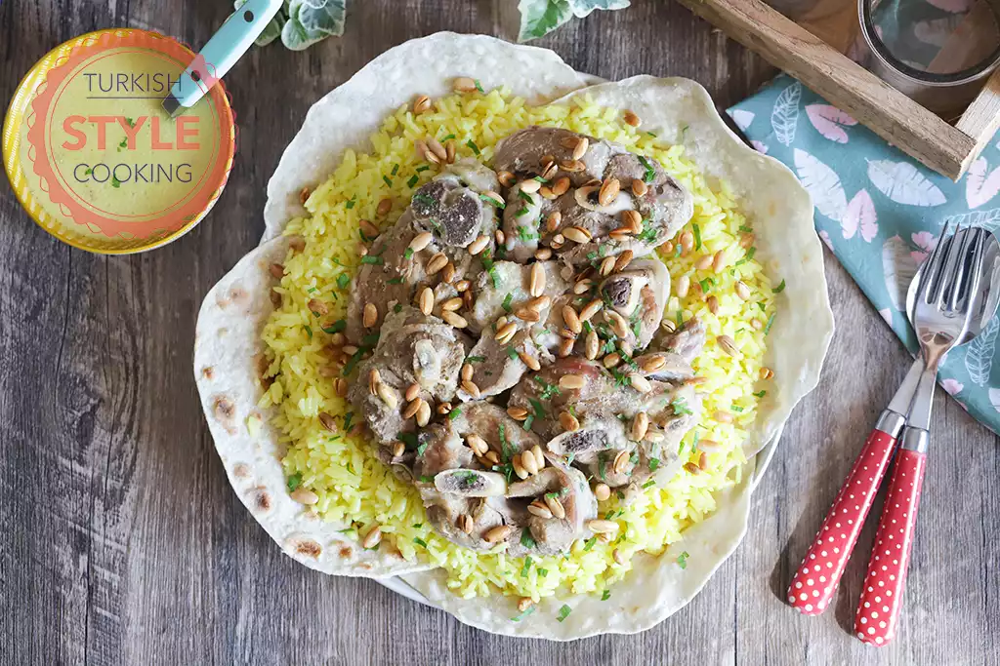

Mansaf Recipes

Description
Mansaf is one of the most famous dishes of Jordanian cuisine. Served with flat bread, bringing rice and lamb together, mansaf becomes suitable for the taste of many eastern and middle eastern countries with the combination of this trio.
Read More
Ingredients
- 1.5 kg of chopped bone-in lamb meat.
- 1 onion.
- 2 bay leaves.
- 2 cardamom.
- Salt.
- 5-6 tablespoons of olive oil.
- 1.5 cups of rice.
- 2.5 cups of boiling water.
- Saffron with the tip of a teaspoon.
- 3 tablespoons of grated Jameed.
- 1 tablespoon of butter.
- 1/4 teaspoon of turmeric.
- Black pepper.
Preparation
- Take the lamb into the pressure cooker.
- Add coarsely chopped onion, bay leaves, cardamom and salt.
- Add enough water to cover them all, cover the lid and cook until the meat softens according to the cooking time of your pot.
- Meanwhile, mix the grated jameed and water in a sauce pan and cook on medium heat until it is reduced to half.
- For the pilaf, heat the oil, add the washed and drained rice, and stir fry until the rice start to stick to each other.
- Add water, salt and saffron and mix.
- Cover the lid and cook on low heat until the water is absorbed.
- Pulse the sauce with an immersion blender until it becomes as homogeneous as possible.
- Add butter, turmeric, black pepper, salt and a cup of broth and mix.
- Drain and take the meat in a separate saucepan, add the sauce, cover and cook on low heat for 10-15 minutes.
- Place tortillas on a large serving plate and spread the rice over it.
- Place the meat on the rice and pour the sauce over.
- Heat the olive oil in a separate pan, add the pine nuts and roast until they turn brown.
- Sprinkle the roasted pine nuts and chopped parsley over the meats.
Bon Appetit...